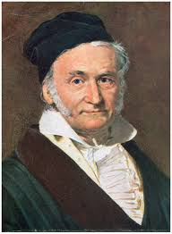

Carl Friedrich Gauss (1777–1855)

Carl Friedrich Gauss was a German mathematician and physicist who made groundbreaking contributions across many fields, including number theory, algebra, statistics, analysis, geometry, and astronomy. Often referred to as the "Prince of Mathematicians," Gauss’s work has had a lasting impact on mathematics and science.
Key Contributions:
- Made significant advances in number theory, including the development of the Prime Number Theorem and the proof of the Fundamental Theorem of Algebra.
- Developed the method of least squares, which is foundational to statistical analysis and data fitting.
- Formulated Gauss's Law in electrostatics and contributed to the field of electromagnetism.
- Created the first comprehensive system for solving quadratic forms and established the theory of Gaussian integers.
Fun Facts:
- At the age of 7, Gauss demonstrated his extraordinary mathematical talent by summing the integers from 1 to 100 in seconds, which amazed his teacher.
- Gauss's work on the normal distribution and statistics led to the popular Gaussian distribution, which is widely used in probability theory and statistics.
- He contributed to the development of the heliotrope, an early instrument for measuring the positions of stars, which helped advance astronomical observations.
Legacy:
Carl Friedrich Gauss’s contributions laid the foundation for much of modern mathematics and physics. His work continues to influence various fields, from number theory and algebra to electromagnetism and astronomy. Gauss is widely regarded as one of the greatest mathematicians in history, and his discoveries are still celebrated and built upon today.
← Back to Timeline